reqs <- c('tidyverse','ggplot2','ggpmisc','rstudioapi','car')
lapply(reqs,require,character.only=TRUE)
rm(reqs)BeeMark_JS
Setup
Load required packages.
Load the data, wherever it is – go find it.
ca_bioclim <- read_csv("../../data/california_bioclim.csv")There are NAs in the data. This’ll remove them:
biocleaned <- ca_bioclim |>
# i'm pretty sure whatever's NA in bio1 is NA across the columns
filter(!is.na(bio1))
# but we can double check
which(is.na(biocleaned))integer(0)Okay, cool.
Assessing collinearity
Climatic factors 1-19 may be collinear. Plotting them against each other helps find which, if any.
form <- as.formula(paste(' ~ ',paste0('biocleaned$bio',1:19,collapse=' + ')))
plot(form, data=biocleaned)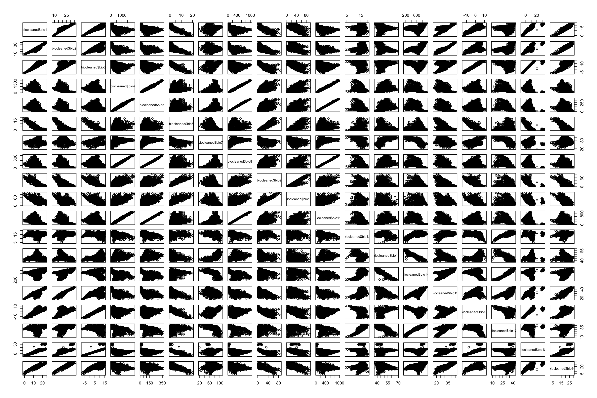
A bunch of things are very obviously collinear. Those ones that look like solid lines have correlation coefficients (slope, right) close to 1.
If you wanna view those as numbers, you can run this:
cor_matrix <- cor(biocleaned[, paste0('bio', 1:19)])
head(cor_matrix) bio1 bio2 bio3 bio4 bio5 bio6
bio1 1.0000000 0.9387533 0.9228316 -0.5555137 -0.4967072 -0.8521213
bio2 0.9387533 1.0000000 0.7381476 -0.6400837 -0.6093176 -0.7040194
bio3 0.9228316 0.7381476 1.0000000 -0.3631964 -0.2825238 -0.8863671
bio4 -0.5555137 -0.6400837 -0.3631964 1.0000000 0.9896912 0.3939929
bio5 -0.4967072 -0.6093176 -0.2825238 0.9896912 1.0000000 0.3059086
bio6 -0.8521213 -0.7040194 -0.8863671 0.3939929 0.3059086 1.0000000
bio7 bio8 bio9 bio10 bio11 bio12
bio1 -0.0009730101 -0.5041291 -0.8218393 -0.6379981 -0.5057455 0.17080491
bio2 -0.2597472893 -0.6165370 -0.6970155 -0.5137123 -0.6162079 0.37677930
bio3 0.2873736264 -0.2880251 -0.8292442 -0.6530972 -0.2921550 -0.08678061
bio4 0.3859301925 0.9929993 0.5959624 0.5390159 0.9919852 -0.38456263
bio5 0.4786507680 0.9979297 0.4990618 0.4481728 0.9987969 -0.41264737
bio6 -0.3607995098 0.3127534 0.9198814 0.7896259 0.3115194 -0.03095412
bio13 bio14 bio15 bio16 bio17 bio18
bio1 -0.06969512 0.21784666 0.8381385 0.8332563 0.18948234 0.8562097
bio2 -0.37771230 0.53835630 0.9606894 0.6070894 0.49800644 0.7594753
bio3 0.28115611 -0.17079885 0.5805486 0.9682933 -0.18436807 0.8463224
bio4 0.32980388 -0.47170126 -0.6199588 -0.1908733 -0.48348957 -0.4108690
bio5 0.39000944 -0.52759496 -0.6051133 -0.1068350 -0.53603766 -0.3580320
bio6 -0.19412845 0.07780463 -0.6008529 -0.8518176 0.06949991 -0.7172992
bio19
bio1 0.8885145
bio2 0.8870159
bio3 0.7519241
bio4 -0.5122055
bio5 -0.4633161
bio6 -0.7851913So the correlation matrix says what plot [1,2] in the paired set says, coefficient of 0.94 between bio1 and bio2. They’re collinear.
VIF: Variance Inflation Factor
VIF is equal to 1/(1-R2). The R2 here is the regression of one variable against all the others. Essentially, the greater the R2, the less variance there is between X1 and X2, the more likely the two are collinear (and the higher the VIF).
The VIF function (from the car package) requires a model, so let’s make those first. One for CWE and one for richness.
form <- as.formula(paste('X_ENDC_CWE_ ~ ', paste0('bio',1:19,collapse=' + ')))
cwe_model <- lm(form, data=biocleaned)
form <- as.formula(paste('X_ENDC_RICHNESS_ ~ ', paste0('bio',1:19,collapse=' + ')))
richness_model <- lm(form, data=biocleaned)Now getting the VIF values.
vif(cwe_model)Error in vif.default(cwe_model): there are aliased coefficients in the modelOh, weird. That returned an error because there are aliases. Meaning the same factor called by two names.
alias(cwe_model)Model :
X_ENDC_CWE_ ~ bio1 + bio2 + bio3 + bio4 + bio5 + bio6 + bio7 +
bio8 + bio9 + bio10 + bio11 + bio12 + bio13 + bio14 + bio15 +
bio16 + bio17 + bio18 + bio19
Complete :
(Intercept) bio1 bio2 bio3 bio4 bio5 bio6 bio7 bio8 bio9 bio10 bio11
bio17 0 0 0 0 0 0 0 0 0 0 0 0
bio12 bio13 bio14 bio15 bio16 bio18 bio19
bio17 0 0 0 1 -1 0 0 Bio17 is linearly dependent on bio15 and bio16. A coefficient of 1 with 15 and -1 with 16 means that Bio17 = Bio15 - Bio16. Alternatively that 15 = 16+17.
And from the metadata…
bio15: Precipitation Seasonality (Coefficient of Variation)
bio16: Precipitation of Wettest Quarter (mm)
bio17: Precipitation of Driest Quarter (mm)
15 is calculated using 16 and 17 to some extent, so let’s omit that one.
# so we're going 1:19 excluding 15
form <- as.formula(paste('X_ENDC_CWE_ ~ ', paste0('bio',(1:19)[-15],collapse=' + ')))
cwe_model <- lm(form, data=biocleaned)
form <- as.formula(paste('X_ENDC_RICHNESS_ ~ ', paste0('bio',(1:19)[-15],collapse=' + ')))
richness_model <- lm(form, data=biocleaned)Now maybe?
vif(cwe_model) bio1 bio2 bio3 bio4 bio5 bio6
776.615104 5866.026045 3359.513892 661.461119 565.783222 17.717827
bio7 bio8 bio9 bio10 bio11 bio12
13.216065 1017.205747 36.232867 14.255377 1329.864377 97.527589
bio13 bio14 bio16 bio17 bio18 bio19
42.246403 1901.358158 164.721961 603.774801 4.886124 23.898703 It ran! What am I looking at? We said VIF = 1/(1-R2). Higher VIF means less variance from the model.
And these are all huge. Uh… the biggest is bio2 with 5866. The variable biow is inflated by a coefficient of 5866 since it’s highly correlated with something else (bio1).
bio1: Annual Mean Temperature (°C * 10)
bio2: Mean Diurnal Range (°C * 10)
Let’s omit that, then. And whatever else we need to until all VIFs are less than 5.
VIF = 1: No multicollinearity.
1 < VIF < 5: Moderate multicollinearity, usually acceptable.
VIF > 5: High multicollinearity, potentially problematic.
VIF > 10: Very high multicollinearity, indicating severe issues
form <- as.formula(paste('X_ENDC_CWE_ ~ ', paste0('bio',c(5:7,12,13,18),collapse=' + ')))
cwe_model <- lm(form, data=biocleaned)
vif(cwe_model) bio5 bio6 bio7 bio12 bio13 bio18
2.067894 3.577167 3.217336 1.350621 1.825745 2.544625 After a lot of pruning, 5:6, 12:13, and 18 remain. For CWE.
bio5: Max Temperature of Warmest Month (°C * 10)
bio6: Min Temperature of Coldest Month (°C * 10)
bio7: Temperature Annual Range (°C * 10)
bio12: Annual Precipitation (mm)
bio13: Precipitation of Wettest Month (mm)
bio18: Precipitation of Warmest Quarter (mm)
Temperature and precipitation.
Let’s do that again for richness.
# doing it one at a time before was awful, can we make the computer do it
# AS LONG AS THE HIGHEST GENERATED VIF IS OVER 5
while (max(vif(richness_model)) > 5) {
# pick out the highest one
max_vif <- names(which.max(vif(richness_model)))
cat("Highest VIF:", max_vif, "=", max(vif(richness_model)), "\n")
# remove the highest one
form <- as.formula(paste(". ~ . -", max_vif))
# update() refits the model with this new formula
# . same x var
# ~ as explained by
# . the same y vars
# - excluding the max vif
richness_model <- update(richness_model, form)
}Highest VIF: bio2 = 5866.026
Highest VIF: bio11 = 1282.79
Highest VIF: bio8 = 830.6972
Highest VIF: bio1 = 572.2757
Highest VIF: bio17 = 511.5304
Highest VIF: bio4 = 225.0083
Highest VIF: bio16 = 125.6904
Highest VIF: bio14 = 61.10783
Highest VIF: bio9 = 23.32158
Highest VIF: bio3 = 19.03651
Highest VIF: bio19 = 7.353515
Highest VIF: bio10 = 5.471308 vif(richness_model) bio5 bio6 bio7 bio12 bio13 bio18
2.067894 3.577167 3.217336 1.350621 1.825745 2.544625 The remaining variables for richness are… the same as for CWE. Great, okay. I don’t know why I expected different, but that works. :)
Re-assessing collinearity
# so there's a function that makes the correlation plots without writing the formula
pairs(biocleaned[,c(paste0('bio',c(5:7,12,13,18)))])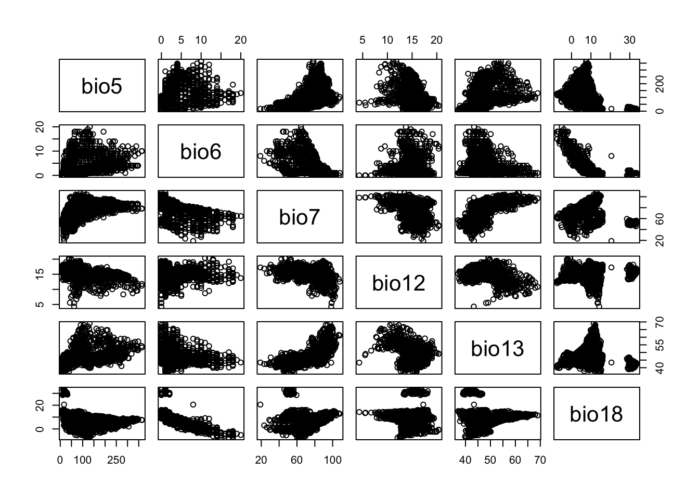
AND THERE ARE NO STRAIGHT LINES.
Correlation matrix just to be sure though:
(cor_matrix <- cor(biocleaned[, paste0('bio', c(5:7,12,13,18))])) bio5 bio6 bio7 bio12 bio13 bio18
bio5 1.0000000 0.30590859 0.47865077 -0.412647374 0.39000944 -0.358032048
bio6 0.3059086 1.00000000 -0.36079951 -0.030954123 -0.19412845 -0.717299184
bio7 0.4786508 -0.36079951 1.00000000 -0.392274390 0.65709487 0.021861538
bio12 -0.4126474 -0.03095412 -0.39227439 1.000000000 -0.32866438 0.002192902
bio13 0.3900094 -0.19412845 0.65709487 -0.328664378 1.00000000 0.052628191
bio18 -0.3580320 -0.71729918 0.02186154 0.002192902 0.05262819 1.000000000Nothing too close to 1. Let’s go.
Checking assumptions.
So now that we have a model, we have to check for normality.
CWE Q-Q Plot
# grabbing the residuals for the cwe model
cwe_res <- rstandard(cwe_model)
qqnorm(cwe_res)
qqline(cwe_res)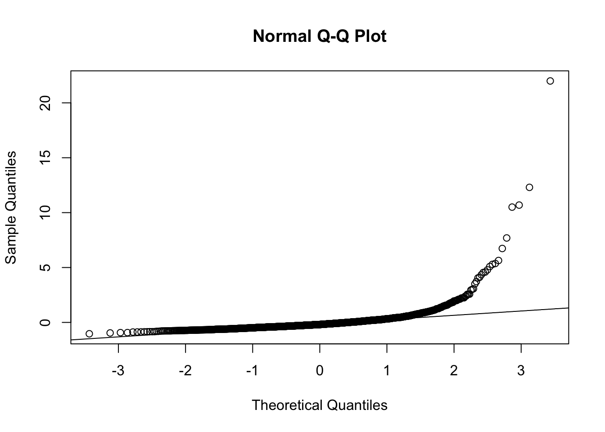
Mostly normal. I think you can do the Shapiro thing to be sure though.
shapiro.test(cwe_res)
Shapiro-Wilk normality test
data: cwe_res
W = 0.43623, p-value < 2.2e-16Yeah, that’s tiny.
CWE Homoscedasticity
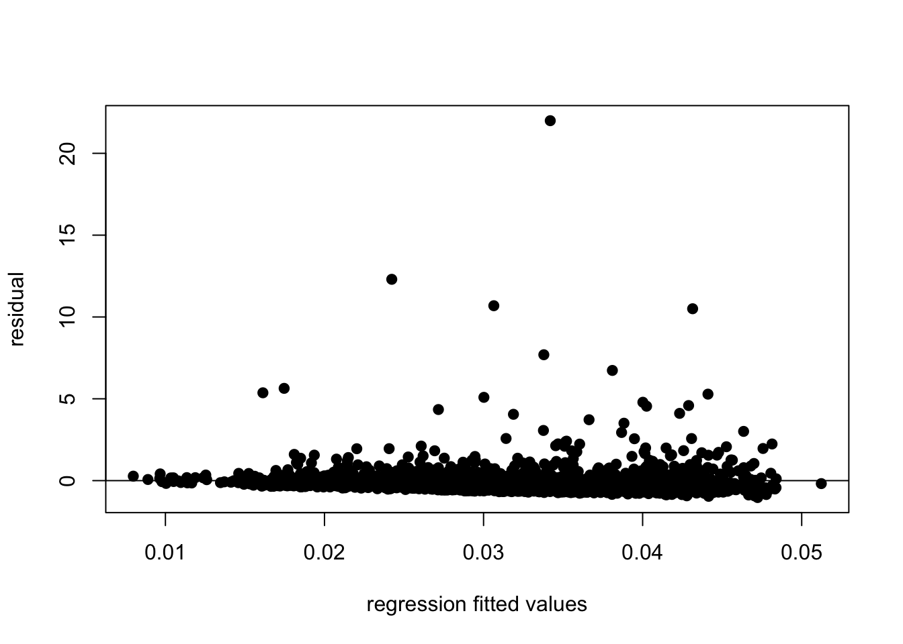
Richness Q-Q Plot
And for richness?
# grabbing the residuals for the cwe model
richness_res <- rstandard(richness_model)
qqnorm(richness_res)
qqline(richness_res)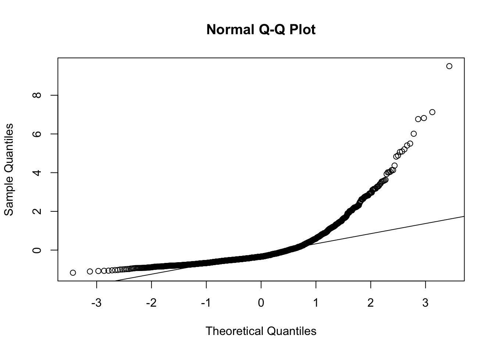
Eeee, less normal than CWE, but I don’t think it’s that bad.
shapiro.test(richness_res)
Shapiro-Wilk normality test
data: richness_res
W = 0.70374, p-value < 2.2e-16Still good, okay.
Richness Homoscedasticity
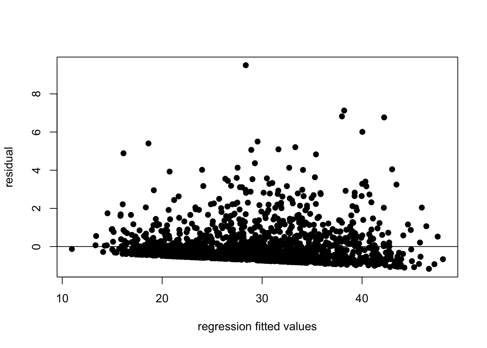
Interpreting the regression
Endemic species weighted by range size
summary(cwe_model)
Call:
lm(formula = form, data = biocleaned)
Residuals:
Min 1Q Median 3Q Max
-0.04511 -0.01749 -0.00829 0.00579 0.96581
Coefficients:
Estimate Std. Error t value Pr(>|t|)
(Intercept) 3.751e-02 1.775e-02 2.113 0.034748 *
bio5 -6.805e-05 2.013e-05 -3.380 0.000742 ***
bio6 7.225e-05 5.079e-04 0.142 0.886903
bio7 -1.620e-04 1.128e-04 -1.436 0.151130
bio12 8.683e-04 6.455e-04 1.345 0.178790
bio13 -4.892e-05 2.720e-04 -0.180 0.857315
bio18 2.197e-04 2.543e-04 0.864 0.387936
---
Signif. codes: 0 '***' 0.001 '**' 0.01 '*' 0.05 '.' 0.1 ' ' 1
Residual standard error: 0.04395 on 1672 degrees of freedom
Multiple R-squared: 0.03571, Adjusted R-squared: 0.03225
F-statistic: 10.32 on 6 and 1672 DF, p-value: 2.99e-115: Maximum temperature
There’s a very, very, very small change in weighted endemism as the max temperature increases.
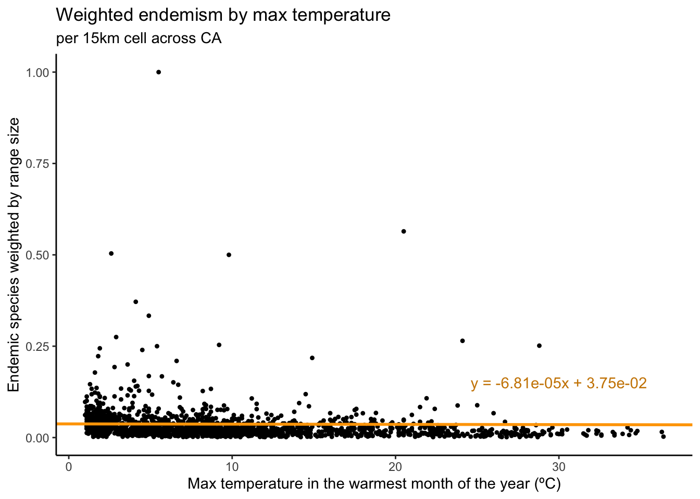
Number of endemic species
summary(richness_model)
Call:
lm(formula = X_ENDC_RICHNESS_ ~ bio5 + bio6 + bio7 + bio12 +
bio13 + bio18, data = biocleaned)
Residuals:
Min 1Q Median 3Q Max
-45.69 -21.58 -13.27 6.13 373.64
Coefficients:
Estimate Std. Error t value Pr(>|t|)
(Intercept) -29.74410 15.89632 -1.871 0.06150 .
bio5 -0.08683 0.01803 -4.816 1.6e-06 ***
bio6 1.45626 0.45487 3.202 0.00139 **
bio7 0.50546 0.10100 5.004 6.2e-07 ***
bio12 0.12132 0.57808 0.210 0.83379
bio13 0.45183 0.24361 1.855 0.06381 .
bio18 0.13340 0.22778 0.586 0.55818
---
Signif. codes: 0 '***' 0.001 '**' 0.01 '*' 0.05 '.' 0.1 ' ' 1
Residual standard error: 39.36 on 1672 degrees of freedom
Multiple R-squared: 0.03155, Adjusted R-squared: 0.02808
F-statistic: 9.079 on 6 and 1672 DF, p-value: 8.604e-10Here, bio5-7 are significant.
5: Maximum temperature
When the max temperature increases by one tenth of a degree Celsius, we lose ~0.09 of a species. +1ºC, -0.9. That’s almost a whole species per degree. There is a ‘too hot’.
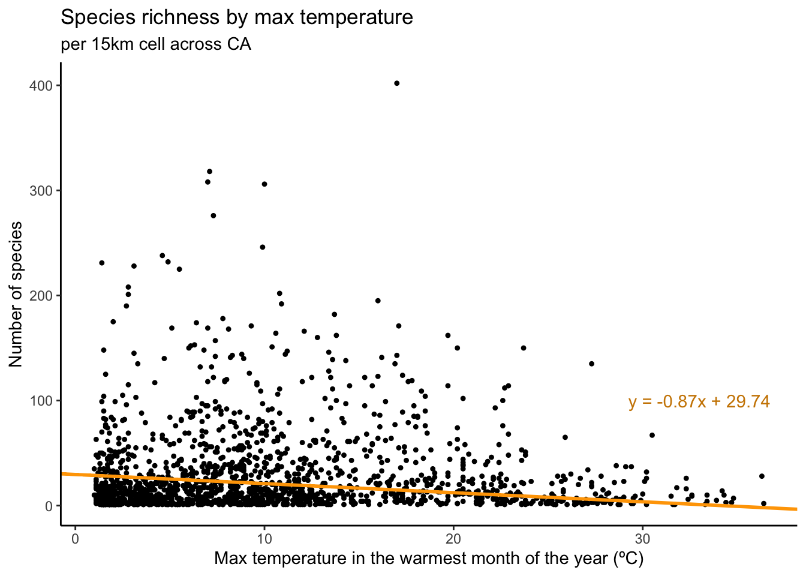
6: Minimum temperature
When the minimum temperature increases by one degree Celsius, we see an increase of 15 species.
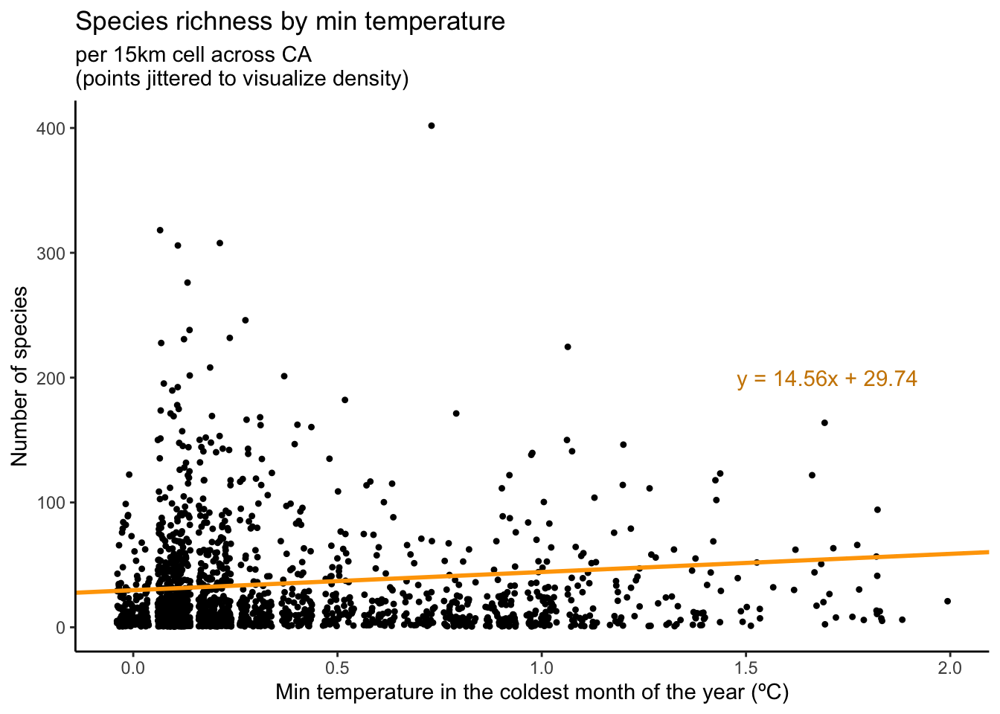
This may be a proportional increase, hold on.
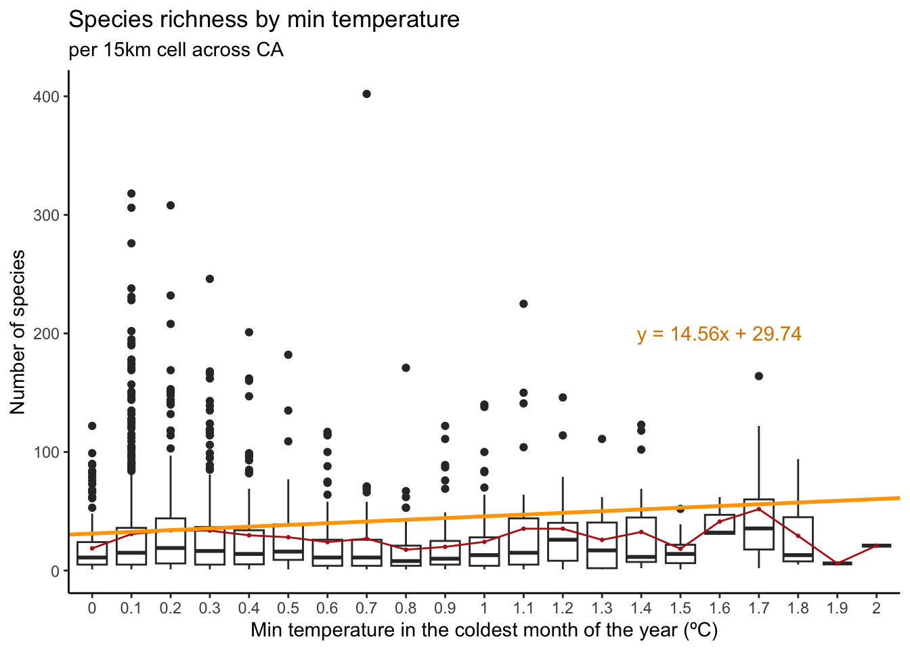
7: Temperature range
When the temperature range increases by a degree, we see an increase of 5 species.
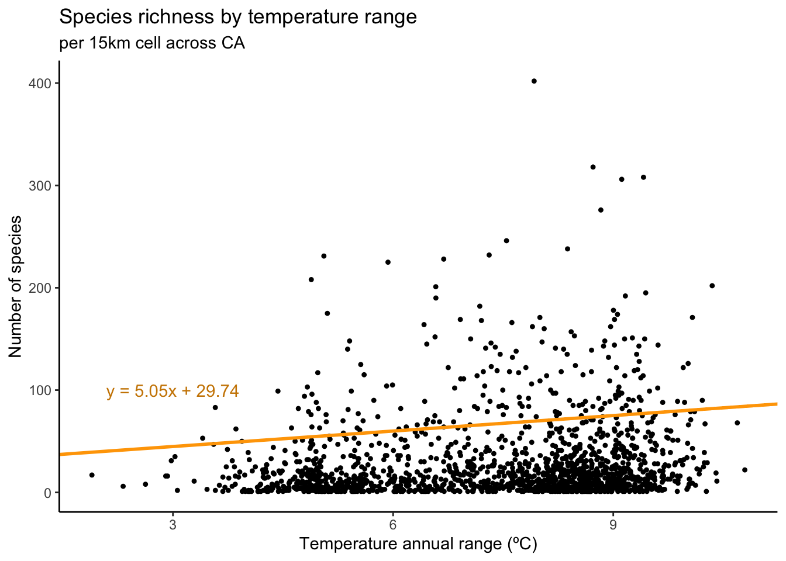